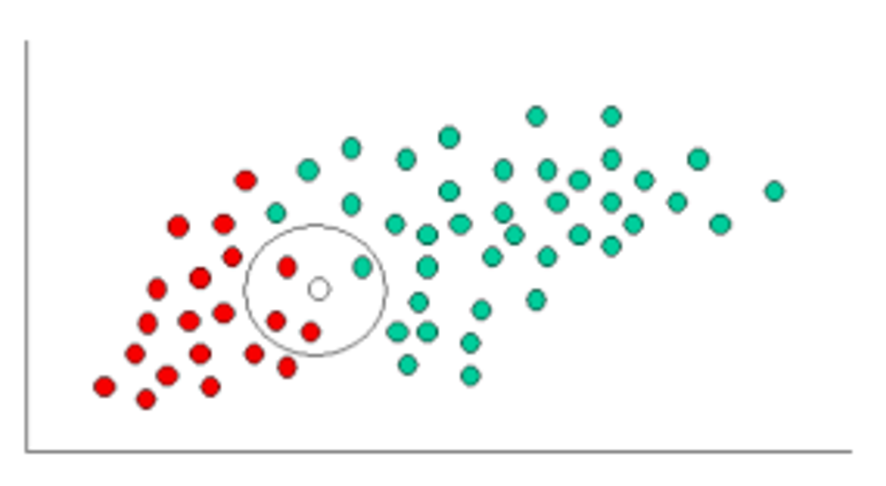

A Concrete Example
To demonstrate the concept of naïve Bayes classification, consider the example displayed in the illustration above. As indicated, the points can be classified as either G for green, or R for red. Our task is to classify new cases based on the statistics of this set.
Since there are twice as many G points as R, it is reasonable to believe that a new case (which hasn't been observed yet) is twice as likely to be green rather than red. In a Bayesian analysis, this is expressed by the prior probability.
Thus, we can write:
Since there is a total of 60 objects, 40 of which are GREEN and 20 RED, our prior probabilities for class membership are:

Having formulated our prior probability, we are now ready to classify a new object (the white circle). Since the objects are well clustered, it is reasonable to assume that the more G (or R) objects in the vicinity of X, the more likely that the new cases belong to that particular color. For this case, we will model the likelihood with a KNN-like probability measure. To measure this likelihood, we draw a circle around X which encompasses a user chosen number of points. Then we calculate percentage of these points in each class label. From this we calculate the likelihood:
From the illustration above, it is clear that Likelihood of X given GREEN is smaller than Likelihood of X given RED, since the circle encompasses 1 GREEN object and 3 RED ones. Thus:
Although the prior probabilities suggest that X may belong to GREEN the likelihoods suggest otherwise. Bayes theorem allows us to weight both of these together. The final classification is given by:
Finally, we classify X as RED since it has the larger posterior given X.